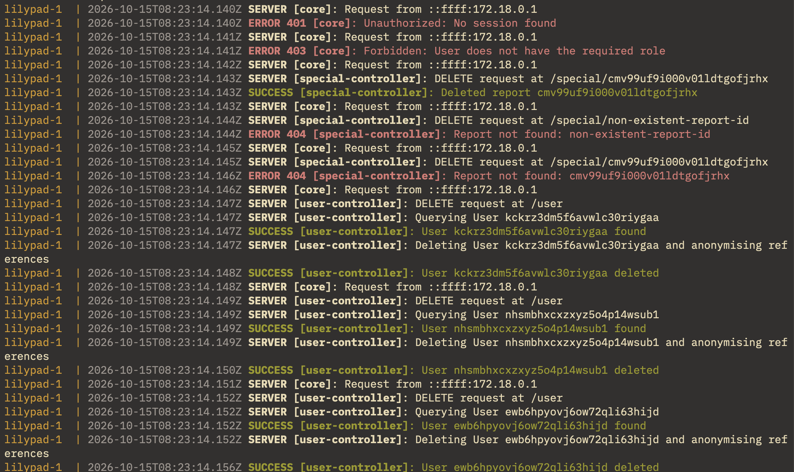
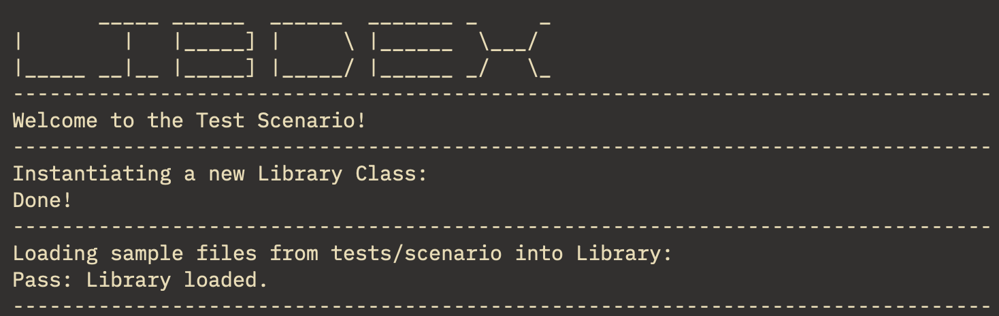
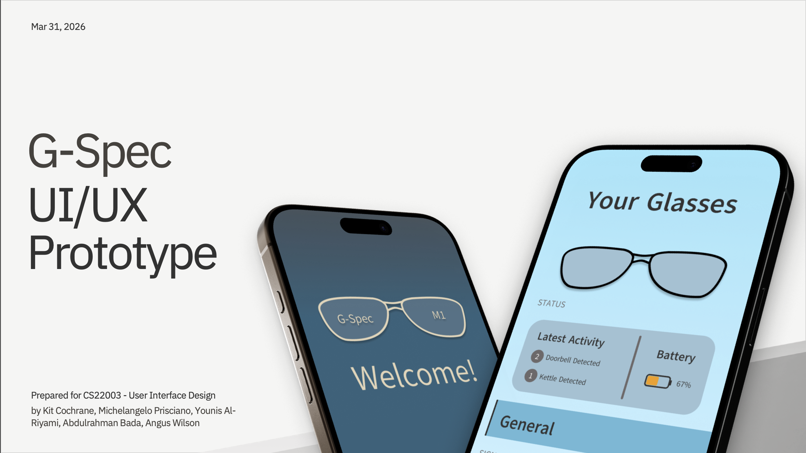

Kit Cochrane // Computer Science Student & Developer
Welcome to my site! I'm Kit Cochrane, a Computer Science Student at the University of Dundee.
Hi there, I'm Kit!
By the fact that you're here I must think that you're looking for me!
Currently, I'm working towards a BSc Computer Science degree at the University of Dundee. Through this I'm working on a few projects here and there, showcased on this very site. Yes, it's a portfolio!
I'm still working out exactly what area I want to focus on, but I do have particular interest in Software Engineering & Networking.
Please do look around at some of my projects! I try to keep it as up to date as possible, but please reach out for any more information!
My Projects!

Lilypad-API
Lilypad-API is the culmination of all the work done during second year. Lilypad is a hyper-localised social media, that using GPS data from a client app, the API sorts and facilitates user interaction within their local area. The API is built on a stack of Bun with Prisma ORM and a Postgres database, written in TypeScript. To our team, we felt this was the best stack for working with the exact data we needed to meet requirements. For this project there was a client pairing, but I primarily worked on the backend. I was responsible for a lot of the design of routes and structure of the API internally along with the data models used within and our comprehensive integration testing. I am currently working on a new client, but this is still in the early stages!
Visit Repository
Scribble
Scribble started as a Java console-based recreation of Scrabble, originally with a lesser ruleset, but I eventually expanded this further to the full ruleset, including scoring for overlapping words and special board tiles. A large part of my personal additions to the game went into the dynamic board sizing and other touches. As much as at its core it was a simple-sounding concept, it proved to be a challenge to implement, and I enjoyed the process and the finished product. I learned a lot about making intuitive command-line interfaces for programs from this project too. While not as accessible as a GUI, I tried to make it as polished and easy to use as possible. The result, I believe, is a very well-polished recreation.
Visit Repository
libDex
libDex was my first adventure into C++ programming and I thoroughly enjoyed it overall. It consists of a library management system, along with classes for different media types and some small helper libraries I built specifically for working with the data. One of the major things I utilised in the project was templating and some more advanced searching and sorting techniques based on what users' search queries are most likely to be. I gained a lot of experience with project management and structure during this project due to the sheer number of files C++ projects require, along with a much greater understanding of Object-Oriented Programming and how the inner workings of C/C++ function and how coding in these languages has stood the test of time.
Visit Repository
Pebl
Pebl is easily the most comprehensive project I have worked on. It is a basic social media client-server pairing similar to Twitter but designed with expandability in mind. As a group collaboration, we created version 1; since then I have revised the program code for some minor updates with more being planned with the original team. Through this project I was responsible for the JavaFX interface originally, although with that completed for now, I have been working on revising all the server connection code in the client and bugfixes.
Visit Repository
ABnegation Company Network
A project I really enjoyed working on more than expected was this network simulation. The scenario for this project was that the ABnegation Company was upgrading its network, and I was tasked with building a test simulation before they committed to the expense. This involved the creation of subnets and the use of some complex routing and masks to keep the networks as small as possible while leaving space for expansion, including some complexities from routing DHCP packets between subnets for the external building without escaping into the wider network and configuration of manual IPs or wireless access for other parts of the building. This is the project that really got me interested in Network Engineering.
Download Packet Tracer File
Shebang
The first project I worked on with the Pebl team, Shebang is a shell to-do list manager. On this project I was initially responsible for the search and sort functions, but ended up taking on some other methods, along with working on the parameter parsing for the initial script. This taught us all a lot about working collaboratively through GitHub, along with general teamwork on a codebase, preparing us for the larger undertaking that Pebl became.
Visit Repository
G-Spec
This was our conceptual UI/UX design for a companion app to a theoretical product, G-Spec, a pair of smart glasses capable of translating between speech and sign language. The whole focus for this project was the accessibility features, implementing an accessible font and high-contrast mode due to the target user base. This project being another team project, I ended up spearheading a lot of the design aspects of the project: layout, theming and overall design language, along with some functionality aspects. I also ended up being responsible for the final presentation design and structure with great success.

GlorboCorp
This project is a simple, satirical webpage for an imaginary company called GlorboCorp, selling a variety of items such as Glorbs & Flards. Set in the distant future of 2055, it takes jabs at the mental state of the fictional developer hired to create the site and its content. The real purpose of the site, however, was to take on learning Bootstrap; the site is entirely built with Bootstrap and its classes over the use of raw CSS or inline styles.
Visit Site
...And more!
You've reached the end of the featured projects here! To see my most up-to-date work, check out my GitHub with all my latest projects I can showcase!
Visit GitHub ProfileSo, a Little Bit About Me!
My Background.
I've been around computers for so long I can't remember when it started. Sometime around 7, I had dived into Scratch and never looked back.
From there, I worked on modding Scratch games; my dad helped me with a Facebook clone with HTML and AngularJS, and I also played with embedded systems like Raspberry Pis using Python.
Time went on and Scratch turned into GameMaker, which became Visual Basic. I began working with vintage PCs to understand PC hardware and the fundamentals of software. By high school, I was intimately familiar with PCs and electronics, regularly doing work well above my level to a high standard.
Having built up this foundation in software and hardware, I began putting it to use in my degree, in learning new languages and frameworks, along with spending my spare time working on electronics repair and building guitar pedals and amplifiers.

Plans and Ambitions?
What do I plan to do with this knowledge, you ask? While I may not know exactly where I want to go, I do have some goals:
- Continue working on my language and framework knowledge (currently learning Dart with Flutter for cross-platform mobile development!)
- Keep up ongoing development of some of the above projects to hopefully build up a user base eventually!
- Build out this portfolio with more new projects!
As for ideas for where I want to specialise, I have a few areas of interest, including:
- Networking - either on the software or hardware side. I find the evolving nature of the field and how it integrates fascinating.
- Software Engineering - this can go a lot of ways, from application development to fault-tolerant systems.
- Games Development - more in the field of working on game engines, particularly with some people I know.
More Info?
Thank You!
You made it to the end of the site! Thank you for looking at my projects and listening to my story. I hope you found something useful in all this information!
If you need any more info or just want to contact me, you can do so with the form provided. I will try to get back to you as soon as I can!
If you want to check me out on my professional platforms, please feel free to do so below:
For a copy of my CV, please click the download button below!
Download CV (PDF)Kit.
Message sent!
Thanks for getting in touch. I'll get back to you as soon as I can.